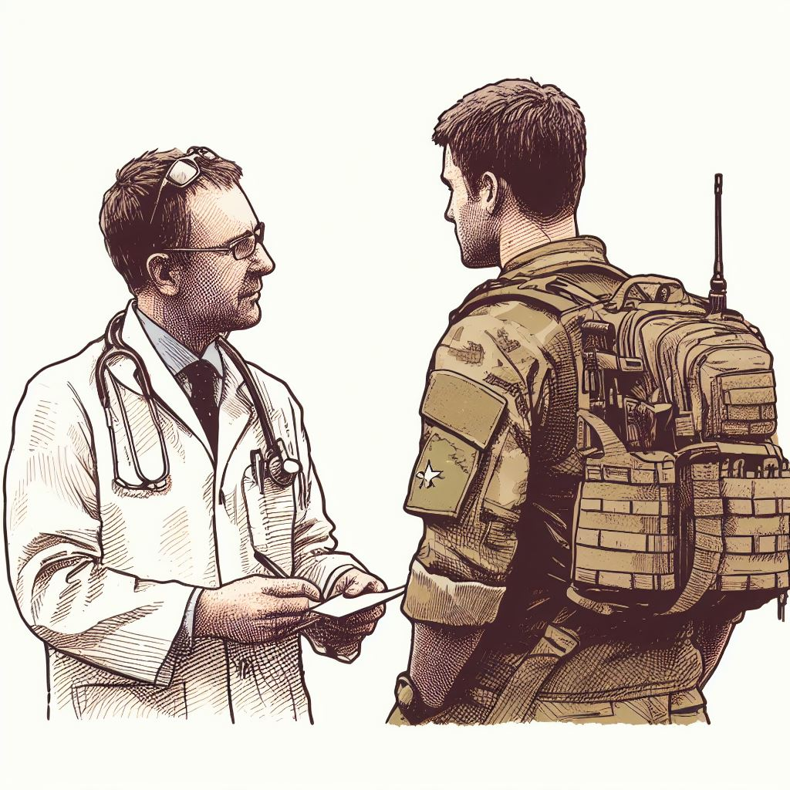

The road to recovery begins with Support
Veteran Defence is dedicated to providing crucial assistance to veteran soldiers as they return to their homeland after serving our nation. We understand that the transition from military life to civilian life can be challenging, and our mission is to make it as smooth as possible. Our organization offers a wide range of services, including mental health counseling, educational resources, housing support, monitary or financial relief and medical assistance. We believe that every veteran deserves a warm and supportive homecoming, and we are committed to helping them reintegrate into their communities and rebuild their lives with dignity and pride
If you or someone you know is an ADF Veteran, and are in need of medical, mental, financial or other forms of assistance, click below to get in contact with volunteers at Veteran Defence.